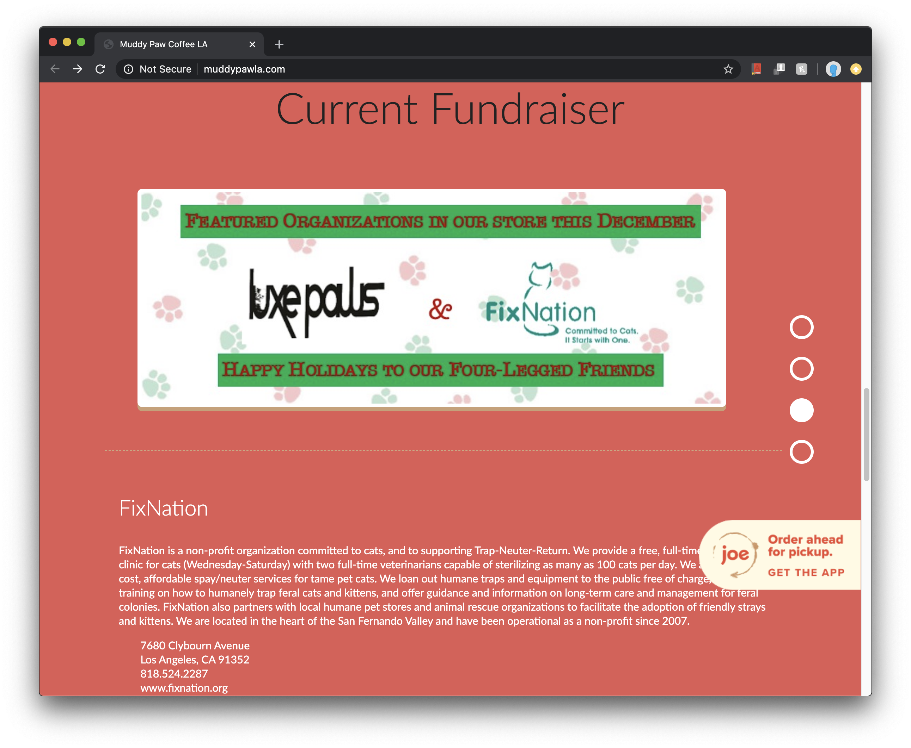
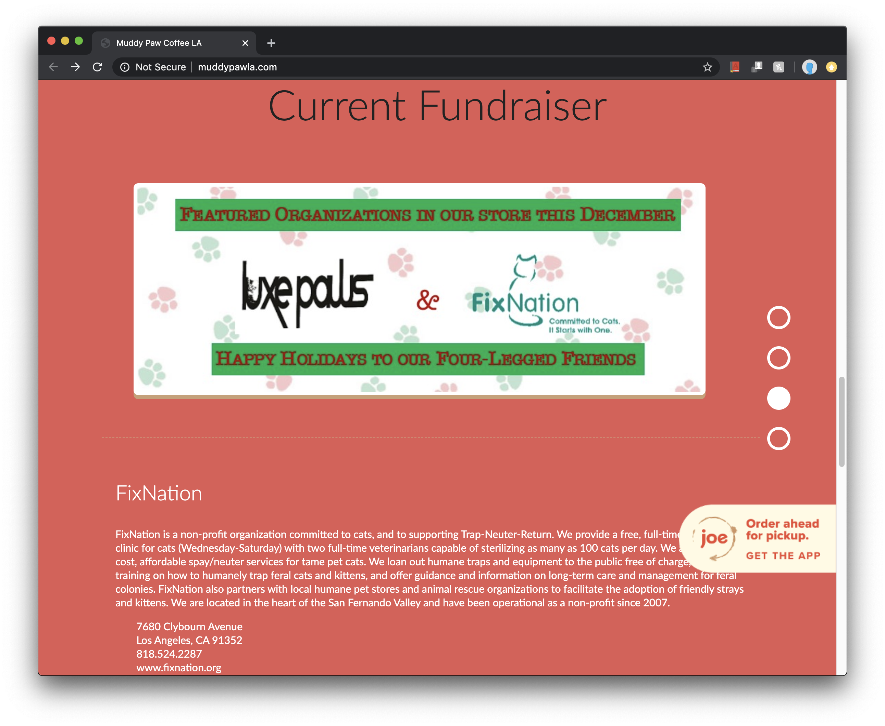
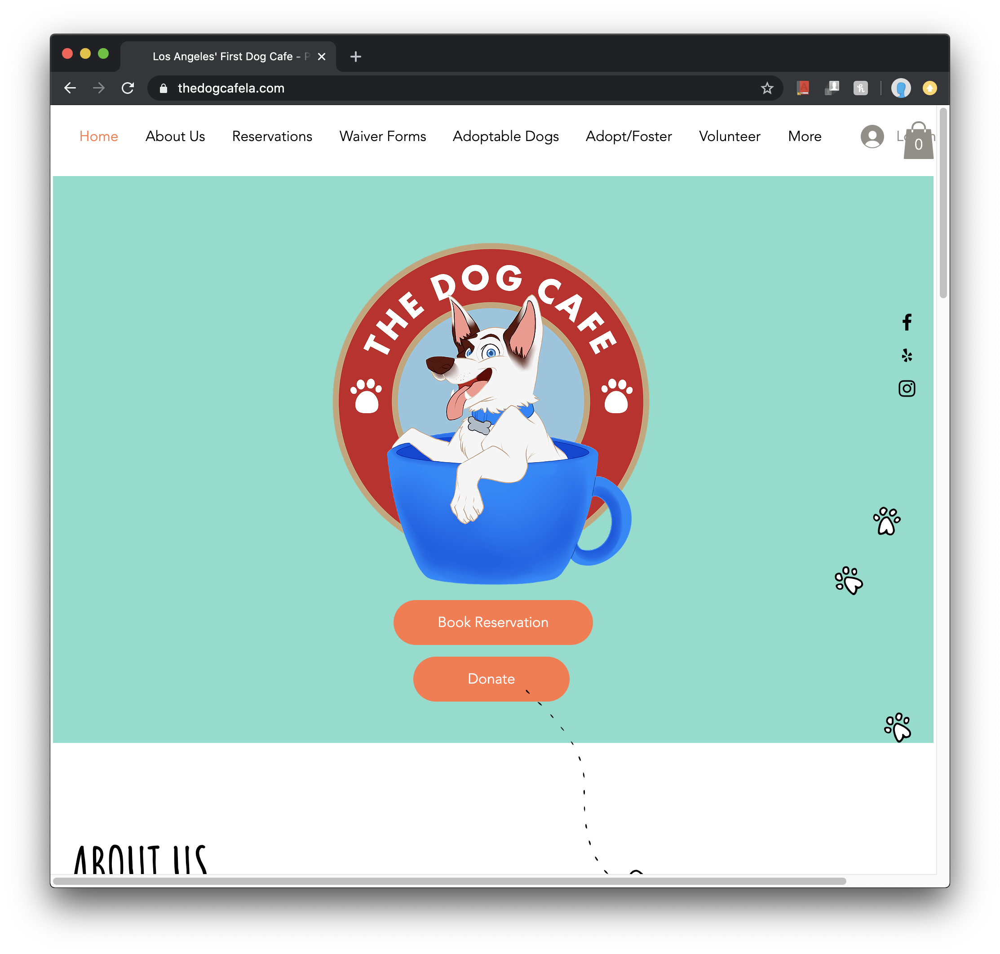
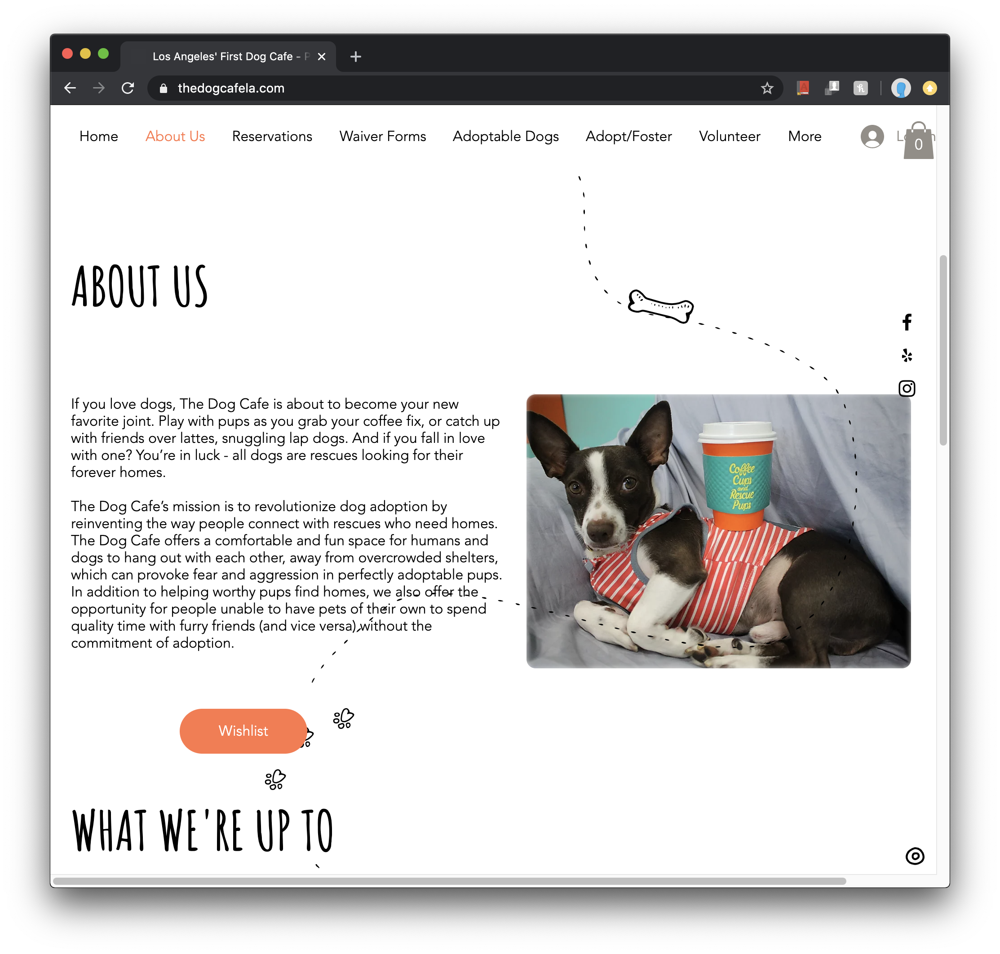
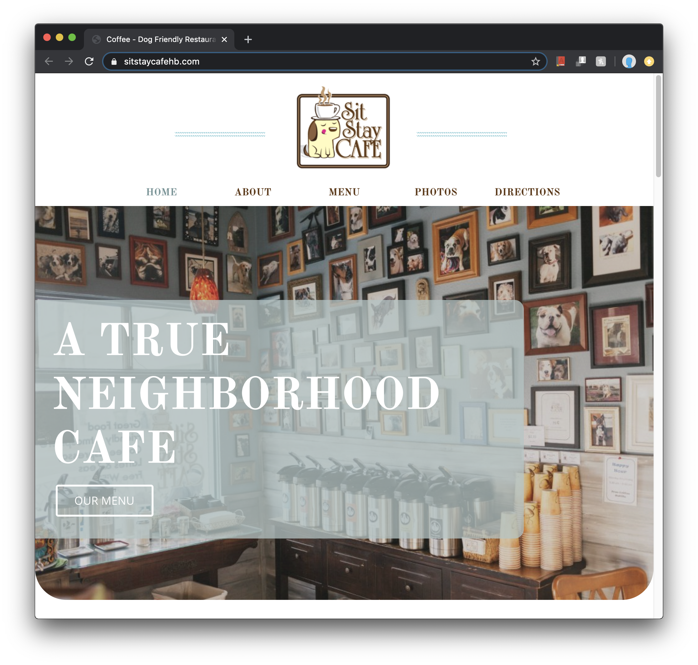
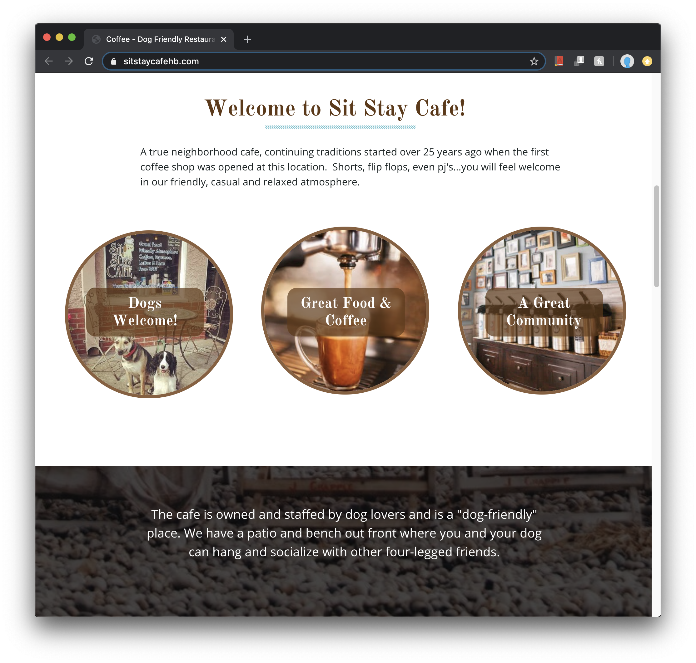

Final project proposal
Introduction
Woof Café
Woof Café is an laid-back, easygoing, dog-themed café that offers wonderful pastries, coffees, and teas with wonderful outside seating. Did I forget to mention you will be cuddling with the cutest dogs in town?
Target audience
The target audience for Woof Café is a younger millenial dog-lover. We want this place to be lively but not childish.
We want Woof Café to be a place from people to come chat, study, de-stress, play, and relax all in the presence of fluffy puppies. We want our café to also serve as a way for dogs to get adopted and to find their forever home.
Comparative analysis
Muddy Paw Coffee
 

The Dog Cafe
 Sit Stay Cafe
 Website content
Home
Woof Café is a place for small groups can come to relax, grab some coffee and chat while recieving all the love that our well-trained resident dogs have to offer.
[Dog looking up and smiling next to table with Woof Café coffee on it.]
About Us
[Dog resting in the seats of Woof Café.]
We started Woof Café to create a space where we could provide tasty, high-quality coffee with the bonus of high-quality puppy love. Whether you are chatting with old friends or cramming for a test, the dogs are there to help you relax from the craziness of the world and get some much needed cuddle time.
Menu
[Pastries and dog treats behind glass display.]
Come try our amazing coffee and when you buy any pastry with it, you also get a nice little cap-paw-cino to help you meet and befriend all the wonderful dogs in our store.
Support
Dog adoption can be a very intimidating process for both you and the dog so we put it on ourselves to provide a calm enviroment for people to get to meet our wonderful pups. You might even find that special little boy or girl that you want to take home! Sadly there are so many dogs at our local shelter that don't get this amazing opportunity so we encourage you to check out the shetler near you and maybe you will find a new best friend.
[Dog sitting on the lap of a customer chatting.]